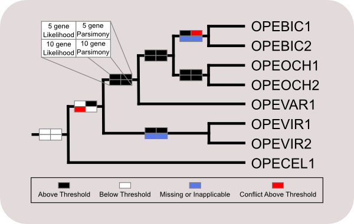

Hypha: a Mesquite package for support value integration.
|
Lead developer Design & Testing |
|
The hypha package modules allow users to draw grids on branches of trees to reflect support values from multiple analyses, as in Miadlikowska et al. (Mycologia, 2006). This package allows users to show multiple node support values on a tree (referred to as the Display Tree), either as the actual support value, or as a color based on a user-defined threshold value. These support values are harvested from Support Value Trees (SVTs), which, in the current implementation, can be non-parametric bootstrap values or Bayesian posterior probabilities.

Support values can be reported from a SVT onto a display tree as long as all taxa in the SVT are also found in the display tree: it will be possible to show support values from a SVT with less taxa onto a more comprehensive display tree as long as the SVT is a subset of the taxa part of the display tree. When topological bi-partitions of the display tree are not found on the SVT, this will be reported on the display tree as inapplicable. If a bipartition in a SVT is not present on the display tree, because it is part of a polytomy of the display tree, all support values will not be reported. As long as all lineages part of a polytomy are represented by at least one descendent on one side of a topological bipartition of a SVT, this value will be reported on the display tree.
For more information, choose one of the links to the left, or:
- Download & install hypha
- Read instructions on how to use hypha
- Change the display options
- Find out how to cite hypha
- Download a pdf of instructions
- Get the source code from github